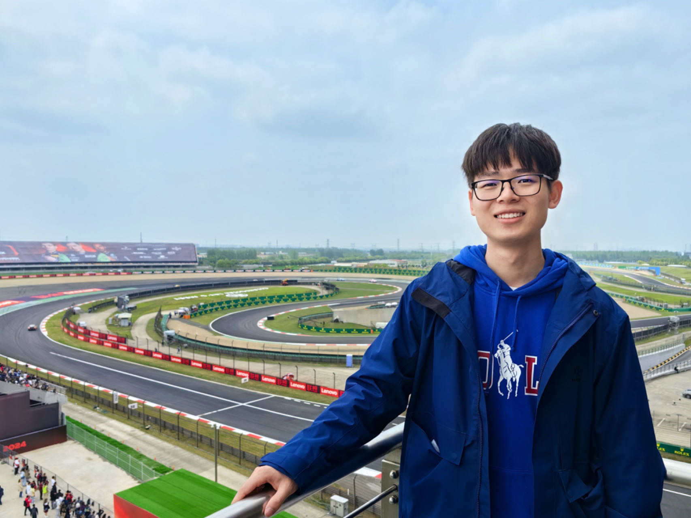

Kaiwen Xue (薛凯文)
Ph.D Student, |

About me
I am currently a first-year Ph.D. student at the Gaoling School of Artificial Intelligence, Renmin University of China, under the fortunate guidance of Prof. Chongxuan Li. Before that I earned my B.E. degree from the School of Information and Software Engineering, University of Electronic Science and Technology of China in 2023. My research interests include deep generative modeling, with a current focus on diffusion models.
Publications
Unifying Bayesian Flow Networks and Diffusion Models through Stochastic Differential Equations
Kaiwen Xue*, Yuhao Zhou*, Shen Nie, Xu Min, Xiaolu Zhang, Jun Zhou, Chongxuan Li
International Conference on Machine Learning (ICML), 2024
[arXiv] [code] [blog]One Transformer Fits All Distributions in Multi-Modal Diffusion at Scale
Fan Bao, Shen Nie, Kaiwen Xue, Chongxuan Li, Shi Pu, Yaole Wang, Gang Yue, Yue Cao, Hang Su, Jun Zhu
International Conference on Machine Learning (ICML), 2023
[arXiv]All are Worth Words: A ViT Backbone for Diffusion Models
Fan Bao, Shen Nie, Kaiwen Xue, Yue Cao, Chongxuan Li, Hang Su, Jun Zhu
Computer Vision and Pattern Recognition (CVPR), 2023
[arXiv]
Honors & Awards